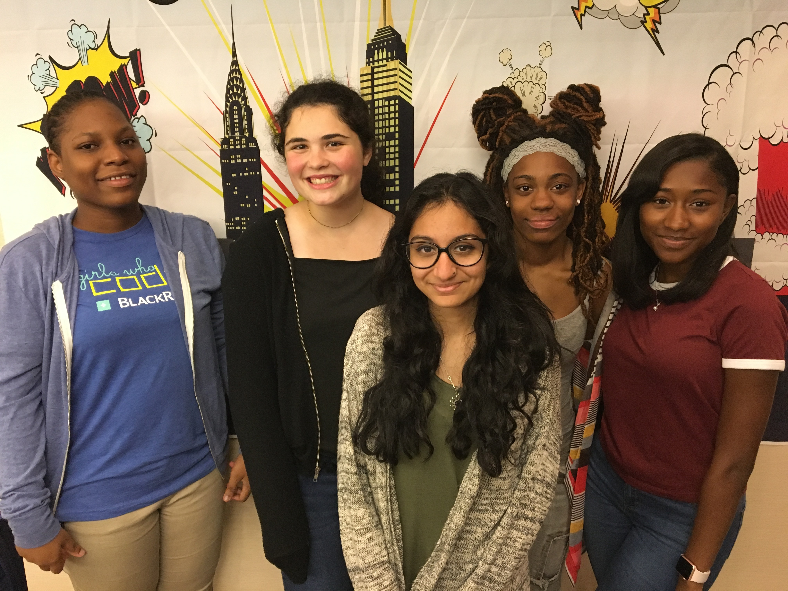

About 1 in 4 people in the United States alone struggle with their mental health, yet only about half of these people seek help. Speaking about mental health is quite taboo in society, which facilitates a negative stigma surrounding the issue. The goal of this website is to raise awareness for, as well as teach about, the struggles that people grappling with their mental health face, in an attempt to start conversations about the topic. It is our hope to destigmatize the issue of mental health by giving people enough information to be able to talk about the topic, and thus normalize the act of seeking help.

(From left to right: Lisa Dolor, Hannah Marrow, Jennifer Thakkar, Layla Flight, Amaris Ramos.)
| Lisa Dolor | Hannah Marrow | Jennifer Thakkar | Layla Flight | Amaris Ramos |
|---|---|---|---|---|
| Lisa is 16-year-old rising junior in high school. She loves reading and writing, and her favorite subjects are English and biology. Lisa’s number one goal in life is to be a successful cardiologist, and the journey so far has not been easy, but she is determined to succeed. Her favorite hobbies are listening to music, watching Netflix, and of course reading. If you want to get to know her better or ask questions; this is her contact information. Email: Lisadolor3@gmail.com LinkedIn: Lisa Dolor |
Hannah is a rising senior who loves dogs and enjoys reading in her free time. She is looking forward to pursuing computer science further in the future and is so happy to be spreading awareness for mental health with this website. | Jennifer is a rising senior at high school, hoping to study computer science and cognitive sciences. She loves to read, play video games, let her creativity and stress out in her bullet journal, and play the piano. In the future, her plan is to work on using machine learning and deep learning to expand technology on the brain. | Layla is a rising senior at Williamsburg High School for Art and Technology. Her favorite things to do are listen to music , explore anything related to tech and staying calm, cool and collected. She loves the artist , Logic and respects the message he spreads #PEACE , LOVE AND POSITIVITY!!!! Most importantly, she hopes to pursue a career in the Computer Science field to apply her coding skills to her future career.To get in contact for any questions here’s her E-Mail ------>laylaflight@gmail.com | Amaris is a rising high school senior, and avid food lover. She joined Girls Who Code because she believes that it's important to close the gender gap in technology. In addition, Amaris has a growing interest in computer science and finds coding to be a creative outlet. Some of Amaris' hobbies include reading, writing, and playing the clarinet. |
Here are some great organizations that you can donate to in order to support people struggling with their mental health:
The Brain and Behavior Research Foundation awards grants to over 4,000 scientists around the world who are researching ways to alleviate the pain that people struggling with their mental health go through. In 2016 alone, they funded more than $19 million in grants to support breakthroughs in scientific research with respect to mental health. Donate here
The Treatment Advocacy Center is dedicated to reforming state civil commitment laws so that people who are struggling with their mental health can receive treatment before they become dangerous. In the last 15 years, it has improved treatment laws in nearly 25 states and promoted the implementation of those laws. Donate here
The American Foundation for Suicide Prevention focuses on empowering those who have been affected by suicide by educating the public about, and advocating for policies in, mental health and suicide prevention, funding scientific research, and supporting survivors of suicide loss and those affected by suicide. Donate here
The American Psychiatric Association Foundation is working to eliminate the stigma surrounding mental health create a mentally healthy nation by informing health policy, supporting careers in psychiatric research, providing resources and opportunities to medical students, and encouraging early recognition and treatment to families, schools, businesses, and the judicial system. Donate here
Project Sanctuary is specifically focused on supporting the mental health of those in the military as well as connecting them with their families when they are healthy through relaxing and decompressing retreats. In the past 10 years, more than 900 families have reconnected through Project Sanctuary. Donate here
Here are some hotlines that you can call or text if you are struggling with your mental health:
The Crisis Call Center is open 24 hours a day, 365 days a year, to support anyone in any kind of crisis, including crises regarding mental helth, depression, and eating disorders. Call 1-800-273-8255 or text ANSWER to 839863 at any time.
The National Suicide Prevention Lifeline provides free and confidential emotional support at any hour of the day for people in suicidal crisis or emotional distress as well as prevention and crisis resources. They also are committed to advacing suicide prevention by empowering individuals and building awareness. Call 1-800-273-8255.
The National Eating Disorders Association is dedicated to supporting individuals and families affected by eating disorders and helping to promote prevention, cures, and access to quality care. For support, call 1-800-931-2237 between 9am and 9pm on Mondays through Thursdays and between 9am and 5pm on Fridays.